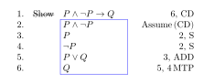

1 ‘Must’ and ‘Might’ — The Modal Logic of Necessity and Possibility
- The responsive layout on mobile portrait might not be as polished; if content is overlapped thus unintelligible, please rotate device to landscape. You might also wish to access the pdf version of this book.
1.1 Modes of Truth and Modal Logics
Historically, notions like necessity, possibility, impossibility, and contingency were thought of as modes of truth or ways in which a proposition could be true or false. Modal logic began as the study of the logic of these modes of truth.
Aristotle, in Chapter 9 of De Interpretatione, discusses modality in his famous example of the sea battle. Suppose the sea battle will be fought tomorrow. Then it was true yesterday that it would be fought tomorrow. So if all past truths are necessarily true, then it is necessarily true now that the battle will be fought tomorrow. A similar argument holds on the supposition that the sea battle will not be fought tomorrow. Aristotle proposed solving this problem of logical fatalism by denying that future contingent propositions have definite truth-values.
Using the ‘\(\Box\)’ for ‘it is necessary that’, the principle that all necessary truths are in fact \[ \Box P\to P,\tag*{(\textbf{T})} \] but adding its converse that all truths are necessary truths: \[ P \to \Box P \tag*{(\textbf{V})} \] collapses the notions of truth and necessary truth.
Medieval philosophers, concerned with such theological issues as articulating the nature of the Trinity, appealed to such modal notions as essence and accident, contingency and necessity in their labyrinthine theological reflections.1 Akin to the problem is logical fatalism is the problem of theological fatalism: the problem of reconciling divine foreknowledge and human freedom. Saint Augustine (354–430) in his treatise On the Free Choice of Will considers an argument for theological fatalism proposed by Evodius. Evodius argued that “God foreknew that man would sin, that which God foreknew must necessarily come to pass.” We may set forth this argument for theological fatalism for a particular case as follows:
1 The theological, if not the political, roots Great Schism of 1054, which can be traced back to a disagreement about the modalities of the Persons of the Trinity. The Nicean Creed (325) uses the term homoousios (from the Greek homo = ‘same‘ and ousios = ‘essence’ or ‘substance’), in contrast to homoiousios (from the Greek homoi = ‘similar’) making the solitary i the jot and tittle of Nicean Creedal Orthodoxy. The Greek Church preferred the latter term since the former had been used by the Syrian Bishop of Antioch to espouse modal monarchism, the heresy that the Heavenly Father, Resurrected Son and Holy Spirit are not three distinct Persons, but are rather different modes or aspects of one monadic God perceived by believers as distinct persons. The Latin Church adopted the former siding with Athanasius against the heretic Arius, who denied that Jesus was co-equal and co-eternal with the Father. The Second Council of Nicea (381), among other changes, inserted the word filioque (from the Latin filio = the son, and que = “and”) into the Nicean-Constantinopolitan Creed and the Latin mass. In Latin theology, the three Persons of the Trinity are logically distinguished by the formal relations of “proceeding from” citing such proof texts as Phil. 1:9, Titus 3:6, Acts 2:33. Orthodox theology, citing the words of Jesus in proof texts such John 15:26, regarded the insertion of filioque into the Nicean-Constantipolitan creed, is as Semi-Sabellianism. The great church historian Jaroslav Pelikan opined: “If there is a special circle of the inferno described by Dante reserved for historians of theology, the principal homework assigned to that subdivision of Hell for at least the first several eons of eternity may well be a thorough study of all the treatises… devoted to the inquiry: Does the Holy Spirit proceed from the Father only, as Eastern Christendom contends, or from both the Father and the Son as the Latin Church teaches?” In 1989 Pope John Paul II and Patriarch Demetrius knelt together in Rome and recited the Nicene Creed without the filioque.
- If God knew that Adam would sin, then, necessarily Adam sinned.
- God knew that Adam would sin (because God is omniscient).
- Therefore, Adam necessarily sinned.
St. Thomas Aquinas (1225–1274) in his Summa Contra Gentiles (part I, chapter 67) criticized this kind of argument as resting on an amphiboly. The critical first premise “if God knew Adam would sin, then, necessarily, Adam sinned” is ambiguous between
- (1a) It is necessarily the case that if God knows that Adam will sin then Adam will sin.
- (1b) If God knows that Adam will sin, then it is necessary that Adam will sin.
Aquinas called (1a) the necessity of the consequence contrasting it with (1b) the necessity of the consequent. Using the ‘\(\Box\)’ to abbreviate ‘it is necessary that’, the difference between these two can be made more perspicuous with symbols: \[ \Box (P \to Q) \tag*{(1\textit{a})} \] \[ (P \to \Box Q) \tag*{(1\textit{b})} \] Solving the famous theological problem of reconciling divine foreknowledge with human freedom may turn on exposing ambiguities of this sort.
Perhaps the most famous theological application of modal logic is Saint Anselm’s modal ontological argument. According to Saint Anselm (1033–1109), it follows from God’s nature that it is necessary that God exists if God exists at all. Moreover, this conditional itself, being a conceptual truth, is itself necessarily true. We then have the following argument:
- Necessarily, if God exists, then God necessarily exists.
- It is possible that God exists.
- Therefore, God (actually) exists.
Using ‘\(\Diamond\)’ for ‘it is possible that’, the above argument can be symbolized: \[ \Box(G\to\Box G).\quad\Diamond G\quad\therefore G\tag*{(2)} \]
The question of whether Anselm’s argument is valid became a precise question when various systems of modal logic were proposed and developed in the 1960s.
Gottlob Frege (1848–1925), the inventor (or discoverer) of modern predicate-quantifier logic, relegated modality to autobiographical information about the speaker, and for many years logicians only investigated extensional logic.
One of the most puzzling validities, at least to the beginning logical students is known as Lewis’s Dilemma: \[P\land\lnot P\to Q,\] which states “a contradiction implies anything”2. This implication follows from the inference rules of simplification, addition, and modus tollendo ponens3, which are themselves not particularly puzzling.
2 Or “ex falso quodlibet”, in Latin.
3 “mode that denies by affirming”

The following theorems are known as the paradoxes of material implication:
- law of denying the antecedent
\[ \class{alref}{\cssId{alref1}{}}\lnot P\to(P\to Q)\tag*{(T18)} \]
- law of affirming the consequent
\[ \class{alref}{\cssId{alref2}{}}Q\to(P\to Q)\tag*{(T2)} \]
- conditional excluded middle
\[ \class{alref}{\cssId{alref3}{}}(P\to Q)\lor(Q\to\lnot Q)\tag*{(T58)} \]
- Consequentia Mirabilis, “admirable consequence” [Cantor’s \(\Delta\)?]
\[ \class{alref}{\cssId{alref4}{}}(\lnot P\to P)\to P\tag*{(T114)} \]
C. I. Lewis investigated modal logic in order to find a stricter form of the conditional which would not result in such paradoxes. Lewis defined strict implication \(P\Rightarrow Q\) (read “\(P\) strictly implies \(Q\)”) by combining modality with the truth-functional conditional: \[ P\Rightarrow Q\quad:=\quad\Box(P\land\lnot Q), \] or alternatively, \[ P\Rightarrow Q\quad:=\quad\Box(P\to Q). \]
The notion of strict implication was characterized by such axioms as:
The philosopher Leibniz (1646–1716) explicitly invoked that language of possible worlds to explain the difference between necessary and contingent truths. What is logically or necessarily true are those truths truth in all possible worlds, whereas a contingent truth is one that is true in some possible worlds.
Drawing upon this logical connection between universal and existential quantification and the modal notions of necessity and possibility, we obtain a modal version of the classical Aristotelian Square of Opposition and the duality of modal laws known as the laws of modal negation.

In the modern development of modal logic, logicians noticed that a host other phenomena—such as deontic notions of obligation and permissibility, epistemic notions of knowledge and belief, as well as temporal operators—share these logical relations and hence can be represented as modal logics.
In deontic logic, \(\Box\) is read “it is morally obligatory that” and \(\Diamond\) is read “it is morally permissible that”. Kant’s maxim that “ought implies can”, that is, whatever is obligatory is permissible, is captured by modal axiom (D): \[ \Box P \to\Diamond P.\tag*{(\textbf{D})} \]
In epistemic logic, \(\Box\) is read for some subject \(S\) “it is known that” and \(\Diamond\) is read “it is believed that”. Some modal axioms for epistemic logic that have been considered include:
- logical omniscience
\[ \class{alref}{\cssId{alref5}{}}\Box(P\to Q)\to(\Box P\to\Box Q)\tag*{(\textbf{K})} \]
- law of affirming the consequent
\[ \class{alref}{\cssId{alref6}{}}\Box P\to P\tag*{(\textbf{T})} \]
- law of affirming the consequent
\[ \class{alref}{\cssId{alref7}{}}\Box P\to\Box\Box P\tag*{(\textbf{4})} \]
- law of affirming the consequent
\[ \class{alref}{\cssId{alref8}{}}\lnot\Box P\to\Box\lnot\Box P\tag*{(\textbf{E})} \]
The axiom (K) expresses logical omniscience insofar as this axiom requires that the knowledge of an agent is closed under modus ponens; and hence such knowers know all the logical consequences of their knowledge.
Axiom (T) states the truism that whatever is known is true. Notice that this axiom would be too strong for deontic logic insofar as an action’s being obligatory doesn’t imply that the agent actually performs that action.
Axiom (4) expresses a high degree of positive introspective knowledge: if someone knows P, then she knows that she knows that \(P\). Axiom (E) on the other hand, expresses a high degree of negative introspective knowledge: if someone doesn’t know that \(P\), then he knows he doesn’t know \(P\). This axiom is contrary to the experience of Socrates: as the gadfly of Athens, Socrates found through his questioning that many of his fellow Athenians did not know what they were talking about but also didn’t know that they didn’t know. The gadfly of Athens believed his vocation was to sting his fellow Athenians into the awareness they were own ignorance, a service for which they did not always show adequate appreciation.
The temporal logic or Diodorian temporal logic was studied by the logician A. N. Prior (1914–1969). To model temporal language, we introduce a pair of modal operators for the future and a pair of modal operators for the past.
| \(\color{green}\Box\) | It is always going [i.e., in all futures] to be the case that |
| \(\color{green}\Diamond\) | It will> [i.e., in some future] be the case that |
| \(\color{red}\Box\) | It has always been [i.e., in all pasts] the case that |
| \(\color{red}\Diamond\) | It was once] [i.e., in some past or “once upon a time”] the case that |
The axioms for minimal tense logic include version of Axiom (K) for the two necessity operators: \[\begin{align*} &{\color{red}\Box}(\varphi\to\psi)\to({\color{red}\Box}\varphi\to{\color{red}\Box}\psi) &\begin{aligned}\text{\textit{Whatever has always followed from what always has been,}}\\\text{\textit{always has been.}}\end{aligned}& \tag*{(K${\color{red}\Box}$)}\\\\ &{\color{green}\Box}(\varphi\to\psi)\to({\color{green}\Box}\varphi\to{\color{green}\Box}\psi) &\begin{aligned}\text{\textit{Whatever will always follow from what always will be,}}\\\text{\textit{always will be.}}\end{aligned}& \tag*{(K${\color{green}\Box}$)} \end{align*}\]
It also contains two axioms concerning the interaction of the past and future that has the form of the so-called Brouwersche axiom with alternating valences: \[\begin{align*} \tag*{(B${\color{green}\Box}{\color{red}\Diamond}$)} &\varphi\to{\color{green}\Box}{\color{red}\Diamond}\varphi &\text{\textit{What is, will always have been}}\\ \tag*{(B${\color{red}\Box}{\color{green}\Diamond}$)} &\varphi\to{\color{red}\Box}{\color{green}\Diamond}\varphi &\text{\textit{What is, has always been going to happen}}\\ \end{align*}\]
The Brouwersche (B) axiom was so-named by the logician Oskar Becker (Becker 1930) after the charismatic Dutch mathematician L. E. J. Brouwer (1881–1966), who championed a philosophy of mathematics known as intuitionism. It happens that when the \(\Diamond\) can be paraphrased as \(\Diamond\lnot\Diamond\), the resulting axiom has the form of the acceptable form of double negation in intuitionistic logic: \[ \varphi\to\lnot\Diamond\lnot\Diamond\varphi\tag*{(\textbf{B})} \]
According to intuitionism, mathematical objects do not exist as eternal Platonic objects but are constructions in intuition. Intuitionists read the propositional connectives as involving not merely truth, but proof, and so they rejected such classical forms of reasoning as reductio ad absurdum and theorems such as the law of excluded middle. Intuitionists reject the following mathematical proof.
Theorem. There exist two irrational numbers \(x\) and \(y\) such that \(x^y\) is irrational.
Proof. Consider \[ \sqrt{2}^{\left(\sqrt{2}^{\sqrt{2}}\right)} =\sqrt{2}^{\left(\sqrt{2}\cdot\sqrt{2}\right)} =\sqrt{2}^2=2, \] which is rational.
The number \(\sqrt{2}^{\sqrt{2}}\) is either rational or irrational.
- If it’s rational, then \(x=y=\sqrt{2}\) are both irrational yet \(x^y\) is rational.
- If \(\sqrt{2}^{\sqrt{2}}\) is irrational, then \(x=\sqrt{2}^{\sqrt{2}}\) and \(y=\sqrt{2}\) are both irrational and \(x^y\) is rational.
Either way there exist \(x\) and \(y\) such that \(x^y\) is rational. \(\Box\)
Intuitionists reject this classical argument by separation of cases because it does not actually construct the numbers \(x\) and \(y\) such that \(xy\) is irrational. The idea behind intuitionistic logic is that the connectives are reinterpreted as involving a kind of provability.
Around the 1970s it was noticed that the famous incompleteness theorems (Gödel 1931) were propositional in character and that their logic could be captured in propositional modal logic. These modal provability logics added to Axiom (K) the following axiom, known as the Gödel-Löb axiom or also the well-ordering axiom. \[ \Box(\Box\varphi\to\varphi)\to\Box\varphi\tag*{(\textbf{W})} \]
Modal Provability Logics proliferated from the 1950s–1970s, but the genesis of the idea goes back to a short note (Gödel 1933) in which he noted that intuitionistic truth is defined in terms of proof since provability is a kind of necessity. The above axiom can be read as a kind of soundness theorem.
- if it is provable that \(\varphi\) being provable implies it is true, then \(\varphi\) is provable.
Later we will show how to use a modal provability logic to exhibit the propositional logic of key parts of Gödel’s First and Second Incompleteness Theorems.
In contemporary logic, modal logic has grown beyond these philosophical origins and is at the interface of a number of disciplines including the studies information flow and dynamics, game theory, and computability.
Exercises
- Symbolize the following modal arguments.
- Eratosthenes must either be in Syene or Alexandria. Eratosthenes cannot be in Syene. Therefore, Eratosthenes must be in Alexandria.
- Assume that justice can be defined as paying your debts and telling the truth. Then it is morally obligatory for Cephalus to comply to a madman’s request that Cephalus return a borrowed sword and that Cephalus tell the truth about the whereabouts of a friend whom the madman wants to kill with the sword. However, if this act is morally obligatory, then it is morally permissible. However, it is morally impermissible (or morally forbidden) for Cephalus to comply. So it isn’t morally obligatory for Cephalus to comply. Justice, therefore, cannot be defined as paying your debts and telling the truth.
- It is conceivable that I am having experiences qualitatively identical to those I am having now on the supposition that I am being deceived by an evil genius. If that is conceivable, then I do not have indubitable knowledge that the external world exists.
- Johan van Benthem (Van Benthem 2010: 12) was asked to symbolize the philosophical claim that “nothing is absolutely relative”. He came up with the following: \[\lnot\Box(\Diamond\varphi\land\Diamond\lnot\varphi).\] Use familiar equivalences from propositional logic and the modal negation laws to show that this symbolization is equivalent to
- McKinsey’s Axiom
\[ \class{alref}{\cssId{alref9}{}} \Box\Diamond\varphi\to\Diamond\Box\varphi\tag*{(\textbf{M})} \]
Match the following symbolizations with the best corresponding translation below.
symbolization translation \({\color{red}\Diamond\Box}P\) It was always the case that it will sometime be the case that \(P\). \({\color{green}\Diamond}P\to{\color{green}\Diamond}P\) It will sometime be the case that it was once the case that \(P\). \({\color{red}\Box}{\color{green}\Diamond}P\) Whatever will always be, will be. \({\color{green}\Diamond}{\color{red}\Diamond}P\) Once upon a time, it was always the case that \(P\).